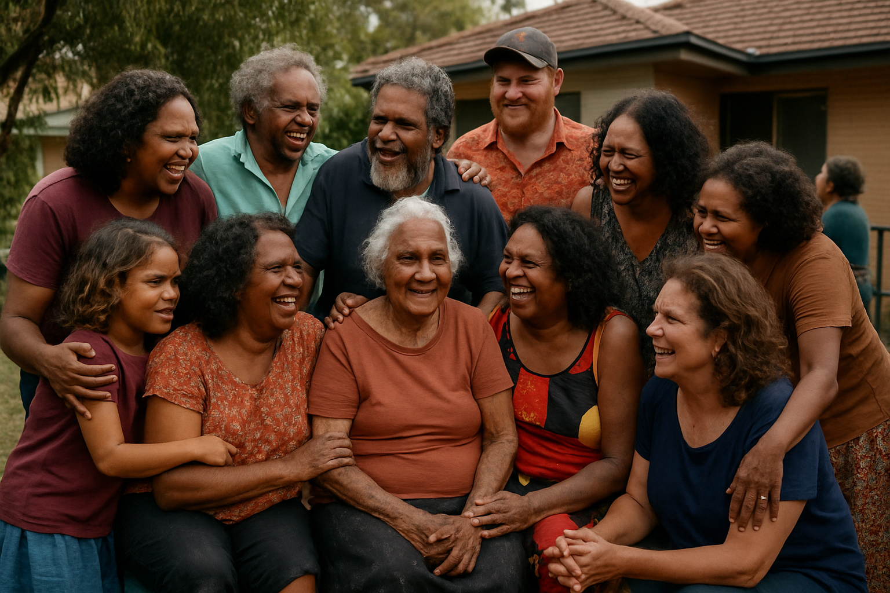
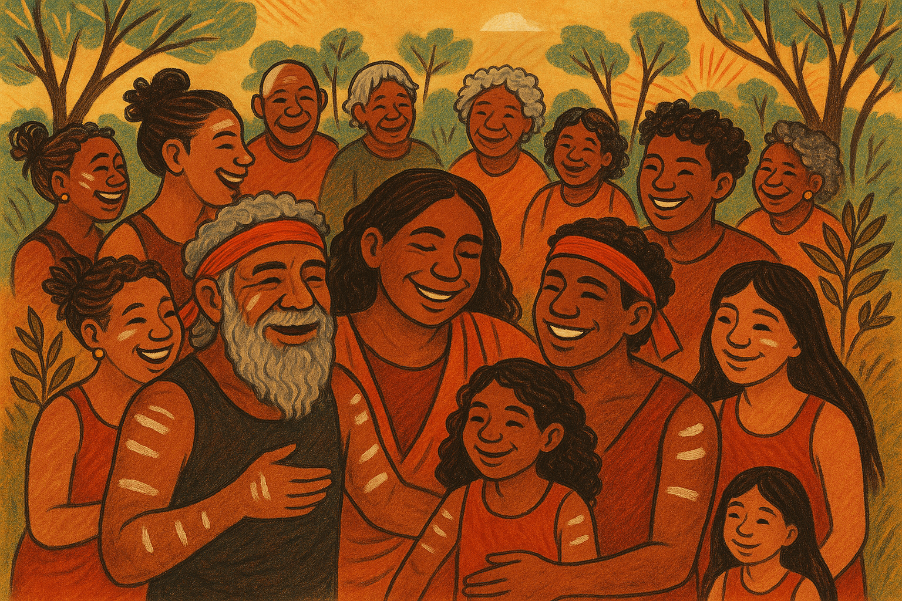

Reflective Design
This page highlights style decisions used to support user meaning and identity.
The below sections explain how each user value maps to design implications and specific elements.
Design implications
Uniqueness is important for both the group to feel unique as a culture and also for individuals within the culture to feel unique. Showing images of unique individuals throughout the website will help support feelings of individual uniqueness. Additionally, including images of the community appearing uniquely within a larger societal setting will invoke feelings of belonging to a unique culture.
Specific elements
Include images of individuals, as well as a unique image demonstrating the communities’ differences from greater society.
Imagery of individuals will be spread throughout the website showing Uniqueness. Focus will be on one key image highlighting the communities’ unique characteristics.
Design implications
Social Cohesion is important for both the client’s aim to reduce social isolation and the user’s desire to feel connected. Clear demonstrations of community members standing together give a sense of belonging and social cohesion.
Specific elements
A hero image on the homepage should show genuine emotion and connection to help invoke a sense of belonging and cohesion.
Design implications
Inclusivity demonstrates the group’s desire to be welcoming to all those who identify as belonging to the group. Warm and inclusive language will help to demonstrate this value and make individuals feel valid and welcomed.
Specific elements
An 'about us' section on the homepage. It’s important for this language to be both warm and inviting but also culturally relevant. Language such as ‘walking together on country’ and ‘individual stories’ would be useful as they promote inclusivity by being warm and inviting to this specific community.
Design implications
Heritage and tradition is an important value to the user group. The website should be customised to use culturally relevant colours and language to align with these values.
Specific elements
Use relevant colloquial language along with colours and traditional images that represent the culture.
The below section considers how the visual language in the website will help achieve an authenticate, welcoming tone.
- Authentically connected to culture
- Community centred and inclusive
- Respectful of tradtition
- Warm and welcoming
- Positive, moving forward.
- Impowering
- Joyful and celebratory of community connections
- Calm and grounding
- Intimate and personal
The below images support my intended identity by dispalying diverse age groups coming together in joy and celebration
 Welcome to Our Community
Walking together on Country, we celebrate the strength and diversity of our stories. We invite you to join us in a space where every journey is valued and every voice is heard. Our community is built on respect, connection, and the sharing of individual stories-each one a vital drop in the flowing river of our collective experience. Here, you are welcomed as you are. Whether you are reconnecting with your roots, seeking to learn, or sharing your journey, you belong. Together, we honour our past, embrace our present, and walk forward into the future-side by side, heart to heart, on Country.
The combination of multigenerational, community-centered imagery with warm, inclusive language directly addresses the client's mission to reduce social isolation. The visual language shows people connected in genuine interaction across generations, while the text explicitly invites participation and belonging.
The below sections elaborate on language considerations for my website
- Use specific terms (community names) before broader terms
- Use plurals for collectives (peoples, nations, cultures, languages)
- Choose empowering, strengths-based language that emphasizes positive stories
- Highlight ongoing connections to community, culture and country
- For specific groups, use their nation, island or community name
- For multiple Aboriginal nations, consider regional terms like 'Murris' or 'Kooris'
- Do not italicize First Nations language words or names - they are Australian languages
- Follow community preferences for capitalization
-
Avoid:
- Shorthand terms like 'Aborigines', 'Islanders' or acronyms like 'ATSI'
- Terms like 'myth', 'legend' or 'folklore' for First Nations beliefs
- Blood quantums (e.g., 'half-caste' or percentage measures)
- 'Us versus them' or deficit language
- Possessive terms such as 'our Aboriginal peoples'
- 'Australian Indigenous peoples' (implies ownership)
- Past tense when referring to ongoing cultures and languages
- Always consult with the relevant community for their preferences
Welcome to Our Community
Walking together on Country, we celebrate the strength and diversity of our stories. We invite you to join us in a space where every journey is valued and every voice is heard. Our community is built on respect, connection, and the sharing of individual stories-each one a vital drop in the flowing river of our collective experience. Here, you are welcomed as you are. Whether you are reconnecting with your roots, seeking to learn, or sharing your journey, you belong. Together, we honour our past, embrace our present, and walk forward into the future-side by side, heart to heart, on Country.
Welcome
Walking together on Country, we celebrate the strengths and diversity of the Turrbal and Yuggera peoples, the Traditional Custodians of Meeanjin (Brisbane). You are warmly invited to connect in a space where every journey is respected and every voice is valued. This community is grounded in respect, connection, and the sharing of individual stories-each one a vital thread in the living tapestry of our collective experience. Whether you are a member of the Turrbal or Yuggera Nations, or a visitor seeking to learn and share, your presence enriches this space. Together, we honour the enduring cultures, languages, and wisdom of the First Nations of Meeanjin, embracing the present and walking forward into the future-side by side, heart to heart, on Country.
- Replaced general references to First Nations with specific mention of the Turrbal and Yuggera peoples as the Traditional Custodians of Brisbane (Meeanjin)
- Used the traditional name "Meeanjin" for Brisbane
- Adjusted the phrasing to reflect the local context and acknowledge both Turrbal and Yuggera Nations.
- Ensured all language remains strengths-based, inclusive, and culturally respectful.